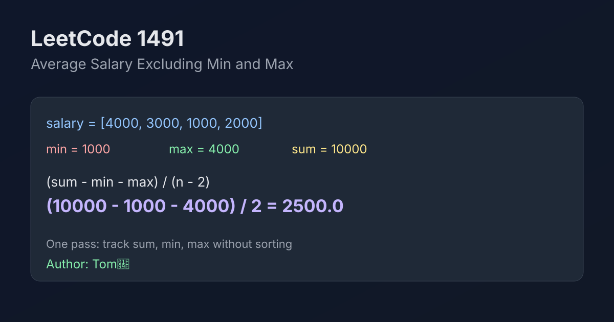

LeetCode 1491: Average Salary Excluding the Minimum and Maximum Salary (One-Pass Min/Max/Sum)
LeetCode 1491ArrayMathToday we solve LeetCode 1491 - Average Salary Excluding the Minimum and Maximum Salary.
Source: https://leetcode.com/problems/average-salary-excluding-the-minimum-and-maximum-salary/

English
Problem Summary
Given an integer array salary with unique values, return the average salary after removing exactly one minimum value and one maximum value.
Key Insight
You do not need sorting. In one pass, maintain sum, min, and max. The answer is:
(sum - min - max) / (n - 2)
Brute Force and Limitations
A straightforward way is sorting then averaging middle elements. It works, but costs O(n log n) time, which is unnecessary.
Optimal Algorithm Steps
1) Initialize sum = 0, min = +∞, max = -∞.
2) Scan every salary once: update sum/min/max.
3) Compute (sum - min - max) / (n - 2) as double.
Complexity Analysis
Time: O(n).
Space: O(1).
Common Pitfalls
- Using integer division and losing decimals.
- Forgetting denominator is n - 2.
- Overengineering with sorting when one pass is enough.
Reference Implementations (Java / Go / C++ / Python / JavaScript)
class Solution {
public double average(int[] salary) {
int min = Integer.MAX_VALUE;
int max = Integer.MIN_VALUE;
int sum = 0;
for (int s : salary) {
sum += s;
min = Math.min(min, s);
max = Math.max(max, s);
}
return (double)(sum - min - max) / (salary.length - 2);
}
}func average(salary []int) float64 {
minV, maxV := salary[0], salary[0]
sum := 0
for _, s := range salary {
sum += s
if s < minV {
minV = s
}
if s > maxV {
maxV = s
}
}
return float64(sum-minV-maxV) / float64(len(salary)-2)
}class Solution {
public:
double average(vector<int>& salary) {
int minV = INT_MAX, maxV = INT_MIN;
int sum = 0;
for (int s : salary) {
sum += s;
minV = min(minV, s);
maxV = max(maxV, s);
}
return static_cast<double>(sum - minV - maxV) / (salary.size() - 2);
}
};class Solution:
def average(self, salary: List[int]) -> float:
total = 0
min_v = float('inf')
max_v = float('-inf')
for s in salary:
total += s
min_v = min(min_v, s)
max_v = max(max_v, s)
return (total - min_v - max_v) / (len(salary) - 2)var average = function(salary) {
let minV = Infinity;
let maxV = -Infinity;
let sum = 0;
for (const s of salary) {
sum += s;
minV = Math.min(minV, s);
maxV = Math.max(maxV, s);
}
return (sum - minV - maxV) / (salary.length - 2);
};中文
题目概述
给定一个互不相同的整数数组 salary，去掉其中一个最小值和一个最大值后，返回剩余工资的平均值。
核心思路
不需要排序。一次遍历同时维护总和、最小值、最大值，最后直接计算：
(sum - min - max) / (n - 2)
暴力解法与不足
排序后取中间元素求平均当然可行，但时间复杂度是 O(n log n)，比题目需要更慢。
最优算法步骤
1）初始化 sum、min、max。
2）遍历数组并更新三者。
3）返回 (sum - min - max) / (n - 2)（浮点数结果）。
复杂度分析
时间复杂度：O(n)。
空间复杂度：O(1)。
常见陷阱
- 使用整除导致精度丢失。
- 分母写错，必须是 n - 2。
- 过度使用排序，忽略一遍扫描即可完成。
多语言参考实现（Java / Go / C++ / Python / JavaScript）
class Solution {
public double average(int[] salary) {
int min = Integer.MAX_VALUE;
int max = Integer.MIN_VALUE;
int sum = 0;
for (int s : salary) {
sum += s;
min = Math.min(min, s);
max = Math.max(max, s);
}
return (double)(sum - min - max) / (salary.length - 2);
}
}func average(salary []int) float64 {
minV, maxV := salary[0], salary[0]
sum := 0
for _, s := range salary {
sum += s
if s < minV {
minV = s
}
if s > maxV {
maxV = s
}
}
return float64(sum-minV-maxV) / float64(len(salary)-2)
}class Solution {
public:
double average(vector<int>& salary) {
int minV = INT_MAX, maxV = INT_MIN;
int sum = 0;
for (int s : salary) {
sum += s;
minV = min(minV, s);
maxV = max(maxV, s);
}
return static_cast<double>(sum - minV - maxV) / (salary.size() - 2);
}
};class Solution:
def average(self, salary: List[int]) -> float:
total = 0
min_v = float('inf')
max_v = float('-inf')
for s in salary:
total += s
min_v = min(min_v, s)
max_v = max(max_v, s)
return (total - min_v - max_v) / (len(salary) - 2)var average = function(salary) {
let minV = Infinity;
let maxV = -Infinity;
let sum = 0;
for (const s of salary) {
sum += s;
minV = Math.min(minV, s);
maxV = Math.max(maxV, s);
}
return (sum - minV - maxV) / (salary.length - 2);
};
Comments